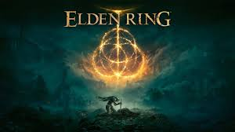
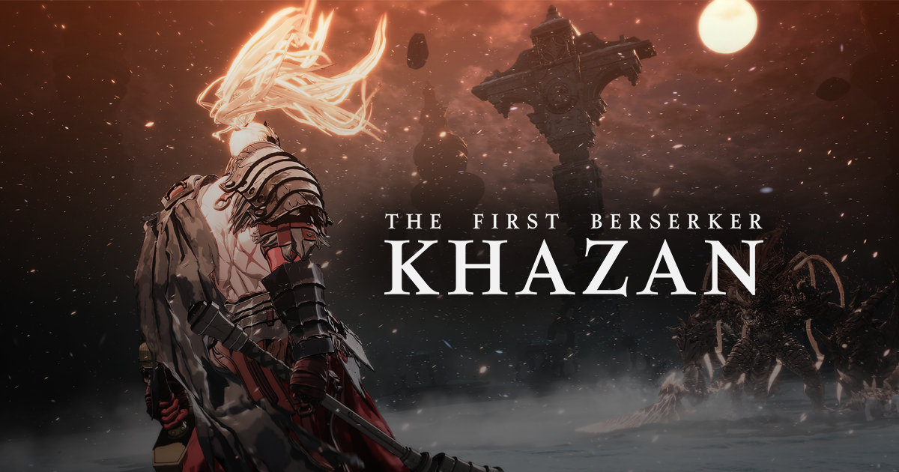

En la vasta y dinámica industria de los videojuegos, con una constante expansión de títulos nuevos que se lanzan cada mes, puede ser un reto para los jugadores encontrar aquellos que realmente valgan la pena. Zona Gamer, entendiendo este desafío, ha creado una sección dentro de su plataforma denominada "Juegos Recomendados". Esta opción, ubicada en la barra de menú principal de la página, busca ser la guía perfecta para aquellos jugadores que desean descubrir juegos emocionantes, innovadores y populares, sin tener que pasar horas buscando entre millones de títulos. En un mercado saturado de opciones, la posibilidad de contar con una selección curada y basada en recomendaciones confiables es invaluable. "Juegos Recomendados" no solo ayuda a simplificar la tarea de encontrar juegos de calidad, sino que también ofrece un espacio donde la comunidad y los expertos pueden compartir sus experiencias y sugerencias. La plataforma se convierte en un punto de referencia para aquellos que buscan nuevos títulos que se alineen con sus intereses y preferencias de juego, garantizando que cada jugador encuentre algo que realmente disfrute. Esta opción tiene como objetivo proporcionar una experiencia personalizada, adaptada a los gustos de cada usuario. Al hacer clic en "Juegos Recomendados" desde la barra del menú, los jugadores no solo accederán a una lista de juegos populares o bien valorados, sino que también podrán explorar recomendaciones basadas en sus propios intereses. Además, esta sección permite a los usuarios descubrir títulos de diferentes géneros, plataformas y estilos, asegurando que todos los gustos y preferencias sean tomados en cuenta. La curaduría de los juegos recomendados se lleva a cabo mediante un sistema inteligente que analiza las preferencias del usuario y las valoraciones de expertos en la industria. Además, las recomendaciones están influenciadas por las valoraciones y reseñas de otros miembros de la comunidad Zona Gamer, lo que convierte a esta opción en una plataforma colaborativa que fomenta la interacción social y el intercambio de opiniones entre los jugadores. Por lo tanto, "Juegos Recomendados" no es solo una lista estática de juegos, sino una herramienta dinámica y personalizada que responde a las necesidades y gustos de cada jugador. Ya sea que busques los juegos más recientes del mercado, títulos que hayan sido altamente valorados por la comunidad, o recomendaciones ajustadas a tus preferencias específicas, esta opción está diseñada para hacer que la experiencia de encontrar nuevos juegos sea más eficiente, enriquecedora y, sobre todo, divertida. Con "Juegos Recomendados", Zona Gamer se convierte en el aliado perfecto para quienes desean estar al día con las mejores ofertas del mundo de los videojuegos, garantizando que cada jugador pueda descubrir los juegos que más les apasionan, sin complicaciones ni pérdidas de tiempo.
Elden Ring es el nuevo videojuego de FromSoftware, creadores de Dark Souls, Sekiro o Bloodborne. Se trata del nuevo título de acción y rol para un jugador ideado por Hidetaka Miyazaki, que en esta ocasión, estrenará un mundo abierto más grande y ambicioso. Su argumento y mitología están firmados por George R.R. Martin, autor de Canción de hielo y fuego.
Assassin's Creed Shadows es un videojuego de acción en mundo abierto que nos lleva a explorar el Japón Fuedal mientras vivimos las las historias entrelazadas de Naoe, una experta Assassin shinobi de la provincia de Iga, y Yasuke, el poderoso samurái africano de las leyendas históricas. Con los últimos años del periodo Sengoku como telón de fondo, estos personajes, cada uno con sus propias habilidades para que cada jugador lo desarrolle como guste, descubrirá su destino común en los comienzos de una nueva era para una ubicación altamente esperada por los jugadores de la saga. Desde espectaculares ciudadelas y puertos bulliciosos hasta apacibles santuarios, pasando por paisajes asolados por la guerra esperan a todos aquellos que deseen aventurarse en su mundo abierto con n clima cambiante e impredecible, habiendo opción en esta ocasión de poder construir una guarida totalmente personalizable donde entrenar aliados, elaborar nuevo equipamiento o interactuar con personajes clave. La superproducción de Ubisoft también invita a crear una red de espías para ver y escuchar todo lo que ocurre en Japón y dar caza al siguiente objetivo.

Ghost of Yotei es Ghost of Tsushima 2, un videojuego de acción y aventura en mundo abierto por el Japón Feudal ambientado varios siglos después del lanzamiento original. Con un nuevo protagonista, una nueva historia por desarrollar y una nueva región de Japón por explorar, desde Sucker Punch Productions y PlayStation Studios buscan llevar a los jugadores a un viaje totalmente nuevo pero familiar protagonizada por Atsu en 1603 que transcurre en las tierras que rodean el monte Yotei, un imponente pico en el corazón de Ezo, una zona de Japón conocida como Hokkaido en la actualidad.

The First Berserker: Khazan se presenta como un intenso RPG de acción. En este videojuego, el jugador se convertirá en Khazan, el gran general del imperio Pell Los, que superó la muerte y se propone revelar los incidentes que llevaron a su caída y vengarse de sus enemigos. The First Berserker: Khazan adapta el universo de DNF (una de las IP más conocidas de Nexon) y garantiza al usuario experimentar el frenético estilo hack and slash de DNF mezclado con acción trepidante mientras te enfrentas a las devastadoras batallas de Khazan en una historia donde su protagonista ha de sobrevivir a la persecución implacable de las fuerzas imperiales, abrirse paso a través de conspiraciones destinadas a matar a Khazan y superar los duros entornos que se encuentre.
